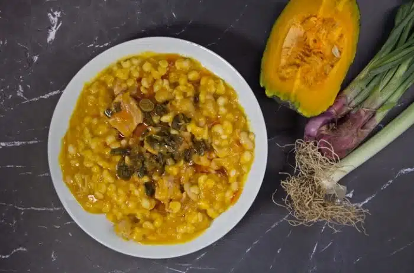

LOCRO

Locro Criollo Argentino
Es un plato elaborado a base de maíz blanco, porotos y zapallo o calabaza.
Requiere una cocción prolongada por lo que permite utilizar cortes de
carne duros como la falda y admite diferentes versiones variando los
ingredientes.
Tiene su origen en la época de la conquista española de América y una rica
tradición que refleja la fusión de ambas culturas. Por su historia y lo
que representa se convirtió en una comida típica de las fechas patrias de
Argentina.
Ingredientes
- 1,5 kg. de tapa de asado
- 350 gr. de huesito de cerdo
- 350 gr. de patita de cerdo
- 350 gr. de panceta
- 350 gr. de chorizo colorado
- 500 gr. de maíz blanco
- 350 gr. de poroto pallares
- 2 kg. de zapallo criollo o (plomo)
- 3 a 5 lts. de agua hirviendo
- Opcional: tripa gorda, cuerito, mondongo.
- 1/2 atado de verdeo
- 1 kg de cebolla
- 2 cdas. de ají molido
- 3 cdas. de pimentón dulce
- Aceite c/n
- 1 cdita. de pimienta blanca
- Sal
Pasos
-
Remojar por separado el poroto pallares y el maíz (al menos seis horas)
-
Limpiar la carne (sobre pecho) de excesos de grasa y nervios, y cortar
en dados de aproximadamente 2 cm.
- Cortar en dados la panceta y reservar junto al chorizo colorado.
-
Pelar y cortar en láminas finas el zapallo, cuidando de dejarlo en la
heladera para evitar que se oxide.
-
Para la salsita que acompaña: cortar la cebolla blanca, el verdeo,
condimentar con sal, ají molido y una pizca de comino. Rehogar hasta
dejar transparente, apagar el fuego y agregar pimentón dulce, dejar
enfriar y guardar en la heladera.
- Por otra parte, el mismo día del locro, estos son los pasos:
-
Calentar la olla y sobre una fina capa de aceite agregar la cebolla
finamente picada, luego la carne, el chorizo colorado (entero, luego se
lo saca y corta para que no se desarme), las patitas de cerdo y la
panceta. Una vez rehogadas, salpimentar, agregar lentamente tres litros
de agua hirviendo, el maíz y dejar hervir aproximadamente dos horas.
- Agregar el poroto y dejar hervir una hora más.
-
Por último, agregar el zapallo y dejar media hora hasta deshacerlo
completamente. Controlar el líquido y agregar agua si le falta para
obtener el punto deseado.
-
Al cabo de cuatro horas sacar del fuego, rectificar el condimento con
sal, pimienta, pizca de comino y, si le gusta, un chorro de aceite con
pimentón.
-
Servir acompañado de verdeo fino picado y la salsa preparada el día
anterior.